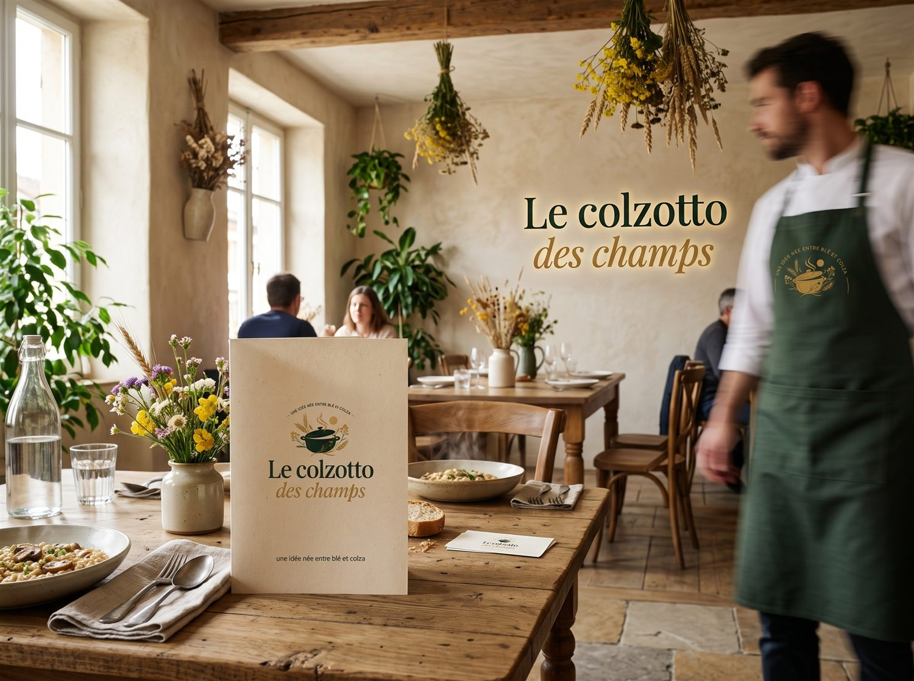

Inspiré par la Beauce
Le colzotto : le blé perlé qui se cuisine comme un risotto.
Champignons dorés, cuisson lente au bouillon et une touche d’huile de colza, ajoutée à la dernière minute.
Découvrir la recette
L’idée
Le blé, travaillé comme un risotto.
Le grain cuit doucement dans le bouillon jusqu’à devenir tendre et lié. Les champignons donnent du relief; l’huile de colza apporte la dernière note.
En savoir plus sur le platLe territoire
Une inspiration de Beauce.
Des champs ouverts, des lignes et des lumières changeantes.
Voir le paysageEn cuisine
La recette, simplement.
Les ingrédients et les étapes pour préparer le colzotto.
Lire la recetteQuestions fréquentes
Le colzotto en quatre réponses.
Qu’est-ce que le colzotto ?
Un plat de blé perlé cuit comme un risotto : on ajoute le bouillon louche après louche, avec des champignons dorés, de l’oignon et un filet d’huile de colza hors du feu.
Peut-on faire un risotto avec du blé ?
Oui. Le blé perlé libère de l’amidon à la cuisson lente et devient tendre et lié, tout en gardant de la tenue. Comptez 25 à 30 minutes.
Pourquoi ajouter l’huile de colza hors du feu ?
Chauffée, elle perd son parfum. Ajoutée à la fin, elle reste présente dans l’assiette avec sa note dorée.
Quelles quantités pour plusieurs personnes ?
La recette est écrite pour 2 personnes (160 g de blé perlé). Le calculateur de portions recalcule tout de 1 à 8 personnes.